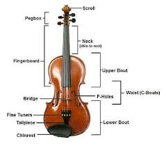
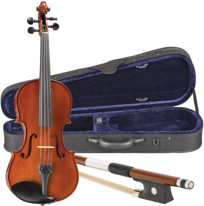
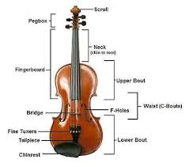
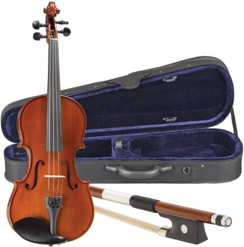

The violin, sometimes known as a fiddle, is a wooden chordophone (string instrument) in the violin family. Most violins have a hollow wooden body. It is the smallest and thus highest-pitched instrument (soprano) in the family in regular use.[a] The violin typically has four strings, (some can have five), usually tuned in perfect fifths with notes G3, D4, A4, E5, and is most commonly played by drawing a bow across its strings. It can also be played by plucking the strings with the fingers (pizzicato) and, in specialized cases, by striking the strings with the wooden side of the bow (col legno).
Violins are important instruments in a wide variety of musical genres. They are most prominent in the Western classical tradition, both in ensembles (from chamber music to orchestras) and as solo instruments. Violins are also important in many varieties of folk music, including country music, bluegrass music, and in jazz. Electric violins with solid bodies and piezoelectric pickups are used in some forms of rock music and jazz fusion, with the pickups plugged into instrument amplifiers and speakers to produce sound. The violin has come to be incorporated in many non-Western music cultures, including Indian music and Iranian music. The name fiddle is often used regardless of the type of music played on it.
The violin was first known in 16th-century Italy, with some further modifications occurring in the 18th and 19th centuries to give the instrument a more powerful sound and projection. In Europe, it served as the basis for the development of other stringed instruments used in Western classical music, such as the viola.[1][2][3]
Violinists and collectors particularly prize the fine historical instruments made by the Stradivari, Guarneri, Guadagnini and Amati families from the 16th to the 18th century in Brescia and Cremona (Italy) and by Jacob Stainer in Austria. According to their reputation, the quality of their sound has defied attempts to explain or equal it, though this belief is disputed.[4][5] Great numbers of instruments have come from the hands of less famous makers, as well as still greater numbers of mass-produced commercial "trade violins" coming from cottage industries in places such as Saxony, Bohemia, and Mirecourt. Many of these trade instruments were formerly sold by Sears, Roebuck and Co. and other mass merchandisers.
The components of a violin are usually made from different types of wood. Violins can be strung with gut, Perlon or other synthetic, or steel strings. A person who makes or repairs violins is called a luthier or violinmaker. One who makes or repairs bows is called an archetier or bowmaker.
| Name | Year of Birth | Year of Death |
|---|---|---|
| L.Subramanian | 1947 | Alive |
| Lalgudi Jayaraman | 1930 | 2013 |
| M.S Gopalakrishnan | 1931 | 2013 |
| Kala ramnath | 1967 | Alive |
| L.Shankar | 1950 | Alive |
| Ragini Shankar | 1989 | Alive |
 


